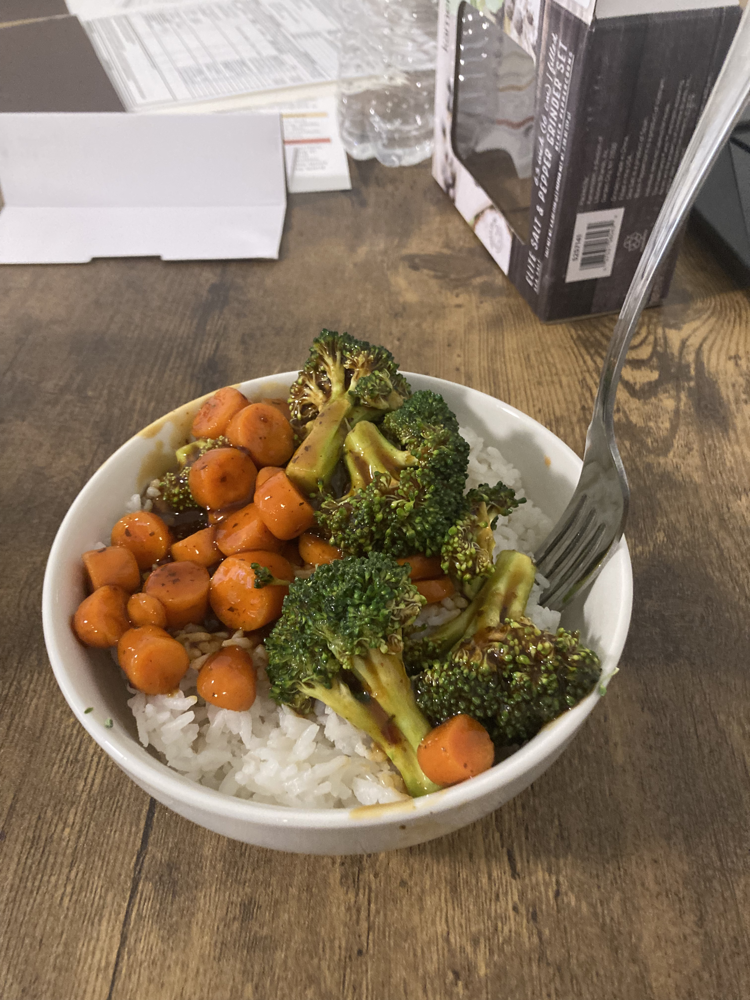

I'm in the Zugpartment 2, now, in Minneapolis, Minnesota! Moved in on the 1st. My mom, my brother, and my dad helped me. As I got out of the car, absolute first thing possible while moving in, a gay couple walking by complimented my cheeseburger backpack. As I was watching the moving truck some guy biked up to me, stopped, and asked if I wanted to buy some weed for some bullshit reason, to which I said no very uncomfortably and shut down all conversation. Anyways, moving in took about 2 hours, and, I mean, it's now been a week! I thought I'd feel something more. I feel mostly mediocre, and isolated. But I felt this way when I first moved to Minnesota, to my aunt's basement, and now I just sorta feel it again.
I don't have the energy to do much other than school. The Zugpartment 2 is much nicer than the original Zugpartment — absolutely clean — but I think I felt a lot more comfortable in the kinda shitty falling-apart nature of the original Zugpartment. I miss hearing haunting echoes through the vents of my downstairs neighbor moaning in pain from the bathroom. I miss my bathroom being a finely-tuned resonance chamber for the roars of the nearby stadium. I miss the AC unit that dripped water onto the floor! I'm uncomfortable and unhappy. And it'll take time to not feel this way. I've spent a lot of very cherished time with close friends online. But I'm so tired, all the time. And I haven't been going outside much. And I don't really know anybody. And I can't drive to do board game night in my aunt's town, because I don't have a car.
I've been working on the game a little. Commissioned a friend, Lambchopper, for some exploratory key art. Been doing writing. Transferring stuff from document to code. Idk. It's slow. It's slow! I've been cooking more. I made some very mediocre vegetable stir fry, and the sauce didn't complement it at all. I'm kind of hungry, all the fucking time, and nothing's super filling.

Brocolli, carrots, spicy szechuan sauce, over rice. The rice is SO good. I LOVE my rice cooker 🍚
Just wrote the previous paragraphs, then went for a walk to my nearby Lunds and Byerlys, as there's a Caribou Coffee inside, and zamn! I feel soooooo much better now! Crazy how that works. Anyways, I'm just left with a lingering feeling of "this is my life now". Y'know? Like I wanted radical change, so I took time, prepared, and then made this radical change. And now I'm here. And it is what it is. It's what it's. I think I like it.
Selfies I took on the way back from Caribou Coffee, iced mocha in my other hand 🥤
New blog color for a new period in my life. The musical vibes for today are You Know How It Is, by KKB, and Dead From The Waist Down, by Catatonia. And Imaginal Disk, by Magdalena Bay, of course!